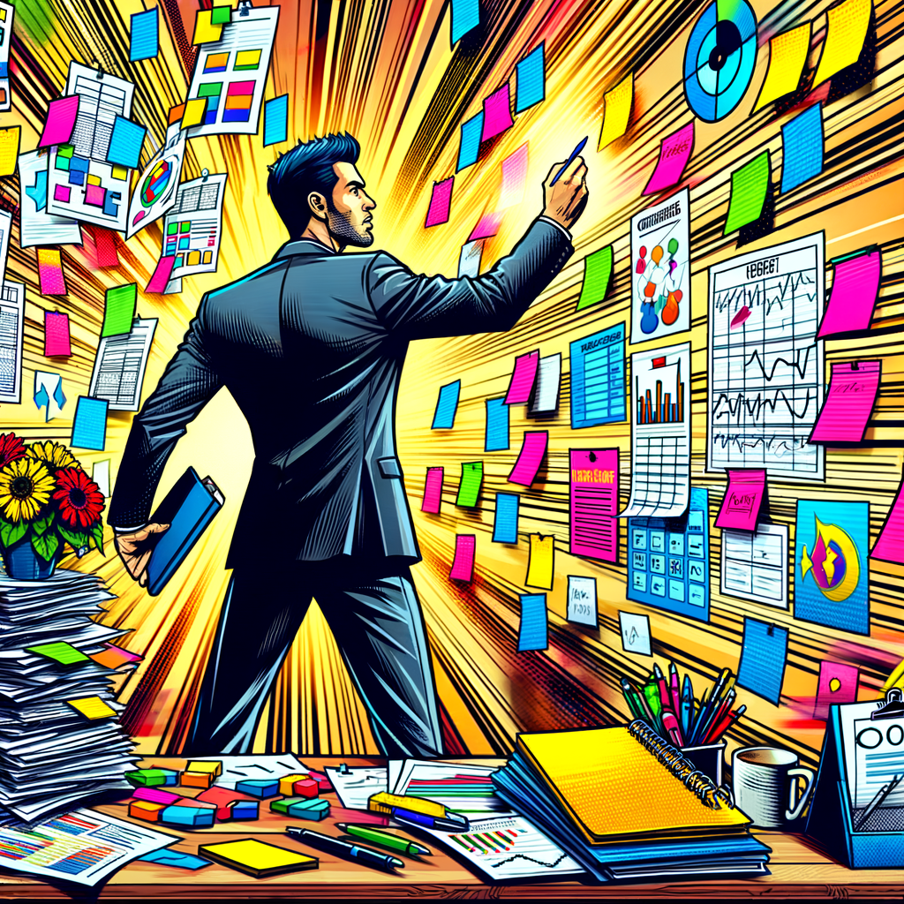
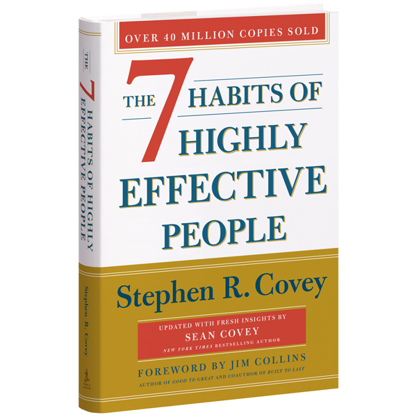
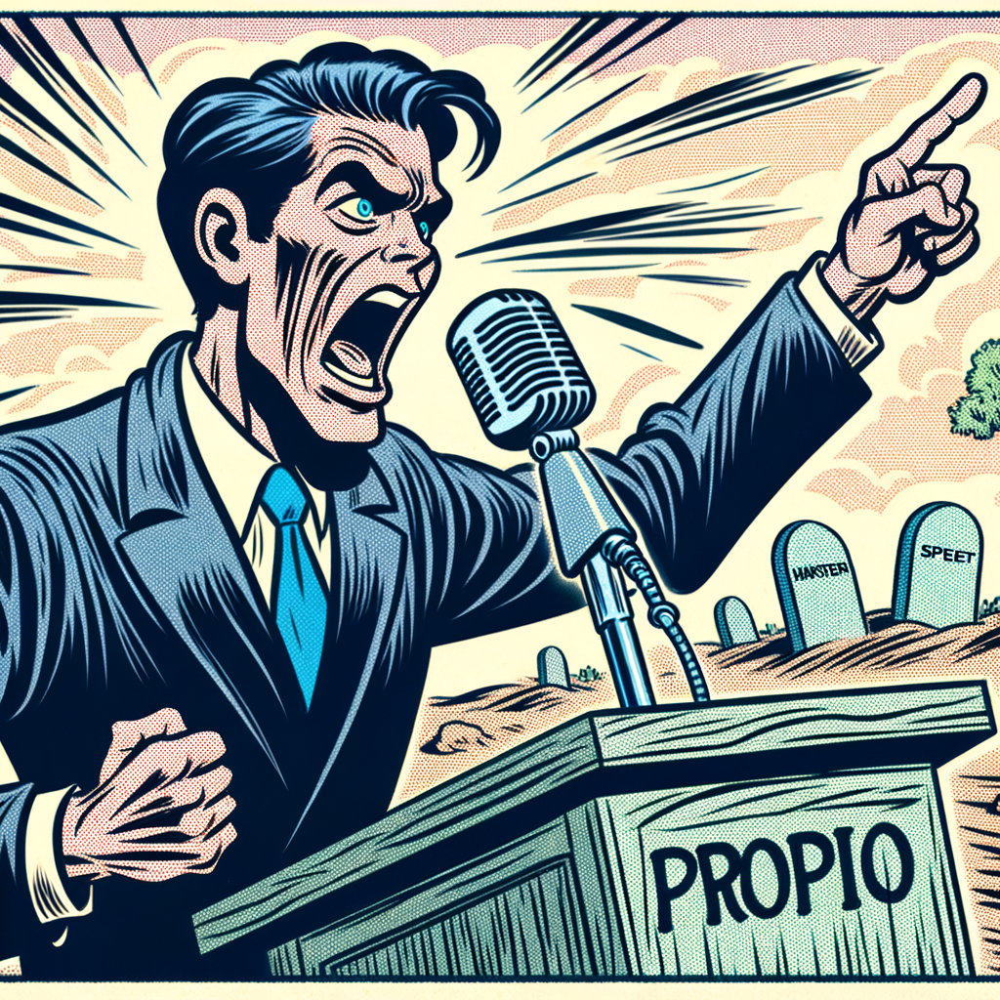

Self-Organization Extreme:
Overengineering a Task Management System
Matthias Eck
11.04.2025
You can never do everything!
You can never can't do everything!
You can do anything,
but you can't do everything!
Getting Things Done
- Capture
- Clarify
- Organize
- Reflect
- Engage
Capture
"Your mind is for having ideas, not holding them." - David Allen
Clarify
Clarify
- Is Actionable?
- Two-Minute-Rule
- Determine Next Action
Organize

Where to Start?

Seven Habits of Highly Effective People
- Be proactive
- Begin with the end in mind
- Put first things first
- Think win-win
- Seek first to understand,
then to be understood - Synergize
- Sharpen the saw
Be proactive
If we do not plan our lives ourselves,
we are shaped by circumstances or people outside our sphere of influence.
Begin with the end in mind
Begin with the end in mind
- Vision
- Purpose
- Goals
How to: Begin with the end in mind...
Grovestone speech

Odyssey plan
...
Put first things first
Life happens...

Life happens...
- Adhoc meetings
- More urgent tasks
- More important tasks
- ...
We are getting "out of sync"...
Getting Things Done
- Capture
- Clarify
- Organize
- Reflect
- Engage
Review
Everytime I do a weekly review, I think damn I should do this more than 4 times a year
— Ali Abdaal (@AliAbdaal) July 18, 2020
“Once a week, do a thorough review of all your projects in as much detail as you need to.
If you do, your systems will work. If you don’t, no system will work.”
David Allen
The overengineered
Self Management System

Requirements
- Tasks in different lists
- Goals
- Regular reviews
- Resources
Image references
| Description | Url / Prompt (ZEISS ZDP DALLE 3) |
| 00-ptd.png | https://gettingthingsdone.com/wp-content/uploads/2017/07/2017_GTD_BookCover_500x767.png |
| 01-capture.png | Create a vibrant comic-style illustration of a man energetically capturing tasks. Showcase dynamic action with exaggerated expressions, bright colors, and whimsical elements. Utilize a bird's-eye view for an engaging perspective, emphasizing his focused demeanor amidst a chaotic office background filled with floating task lists. |
| 01-clarify.png | Create a vibrant comic-style illustration of a focused man, enthusiastically clarifying tasks, surrounded by colorful sticky notes and a whiteboard. Use dynamic angles and bold outlines, emphasizing action and clarity in a lively workspace, with a bright color palette and expressive facial features. |
| 01-organize-1.png | Create a vibrant comic-style illustration of a man actively organizing tasks, surrounded by sticky notes and a whiteboard. Emphasize a sense of productivity with bright colors, dynamic angles, and playful expressions, capturing the essence of Getting Things Done philosophy. |
| 01-organize-2.png | Create a vibrant comic-style illustration of a man organizing tasks inspired by productivity methods. Display a chaotic workspace filled with colorful lists, sticky notes, and charts. Capture a sense of focus and determination, using dynamic angles and bold colors to emphasize the bustling environment. |
| 01-no-priorities.png | A vibrant comic-style illustration of a confused man juggling multiple tasks, surrounded by floating to-do lists and icons. The scene captures his bewildered expression, with exaggerated comic elements, bright colors, and dynamic angles to convey chaos and humor. |
| 02-7-habits.png | https://www.franklincovey.com/wp-content/uploads/2023/11/book_7-habits_600x600.png |
| 02-end-in-mind.png | Create a vibrant comic-style illustration of a determined man, focusing on his goals, embodying the essence of "Begin with the End in Mind." Show him surrounded by visual representations of his dreams, with a dynamic perspective and bold colors. |
| Description | Url / Prompt (ZEISS ZDP DALLE 3) |
| 02-grovestone-speech.png | A comic-style illustration of a man animatedly delivering a speech while holding his own gravestone. The scene is vibrant and expressive, capturing his introspection and humor, with exaggerated facial expressions. The background features a whimsical landscape, enhancing the reflective yet light-hearted mood. |
| 02-odyssey-plan.png | A comic-style illustration of a man thoughtfully sketching an odyssey plan. The scene captures a vibrant, whimsical atmosphere with bold colors and dynamic lines. The viewpoint is slightly overhead, highlighting a cluttered desk filled with papers and ideas, evoking creativity and exploration. |
| 02-put-first-things-first.png | Create a vibrant comic-style illustration of a determined man, focused on his goals, symbolizing the third habit from "The 7 Habits of Highly Effective People." Use bold colors, dynamic angles, and expressive facial features to convey motivation and clarity. |
| 02-eisenhover-matrix.png | Create a vibrant comic-style illustration depicting the Eisenhower Matrix. Showcase four quadrants labeled by urgency and importance, using bold colors and dynamic characters expressing different tasks. Include speech bubbles and action lines for a lively, engaging presentation. |
| 02-life-happens.png | A comic style illustration of a frustrated man surrounded by chaotic distractions, symbolizing life's interruptions. Emphasize expressive facial features, vibrant colors, and dynamic lines. Capture a mix of determination and despair in a split-panel layout, highlighting his shifting focus on personal goals. |
| 03-review.png | A vibrant comic-style illustration of a confident man reviewing a weekly planner, surrounded by task lists and colorful sticky notes. The scene captures a bright, dynamic workspace with exaggerated expressions and action lines, highlighting his enthusiasm for planning the upcoming week. |
| 04-overengineered-system.png | Create a comic-style illustration of a cheerful man enthusiastically using an complex overengineered self-management tool surrounded by quirky gadgets and charts. Include bold colors, exaggerated expressions, and dynamic angles to emphasize his excitement. |